Layered conifers, leafy trees, bushes and boulders; a rippled lake; soft clouds, sun glare and sunlit dust.
RACE SETUP menu with 🎲 RANDOMIZE and "Surprise me every race"; a DRIVER button; faster fast-forward.
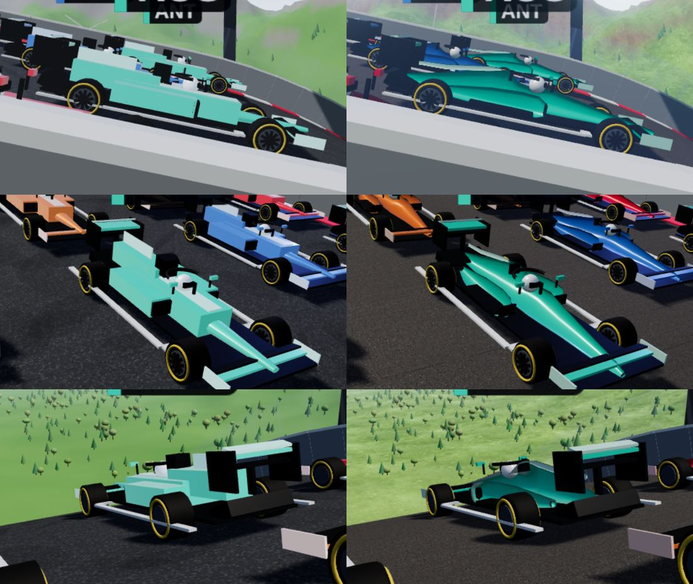
Left before, right after. The same car from three angles.
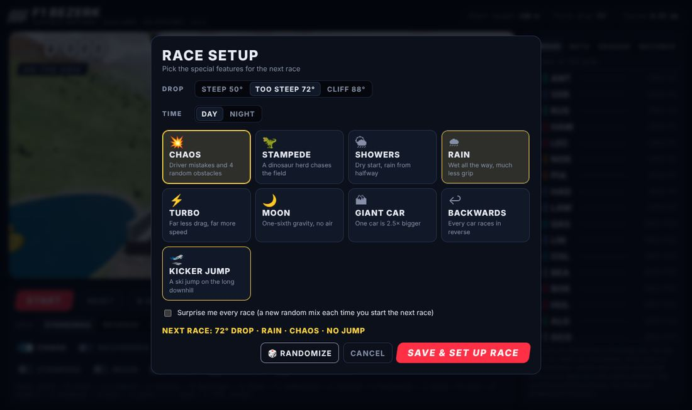
RACE SETUP. Pick features or let the dice decide; the hosts announce the mix.
v2.0 · round 3
Redesign and night racing
A clean control bar: START, RESET, SETUP, RANDOMIZE, SPEED; everything else lives in RACE SETUP, with a "THIS RACE" summary.
Night: dark hills under moonlight, floodlight pools and beams, real lights that follow the action, red rear lights with light trails, a moon and crowd camera flashes.
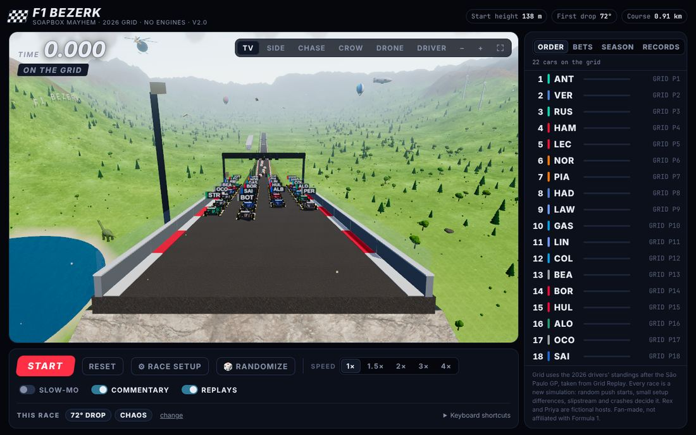
Redesign. One row of everyday controls.
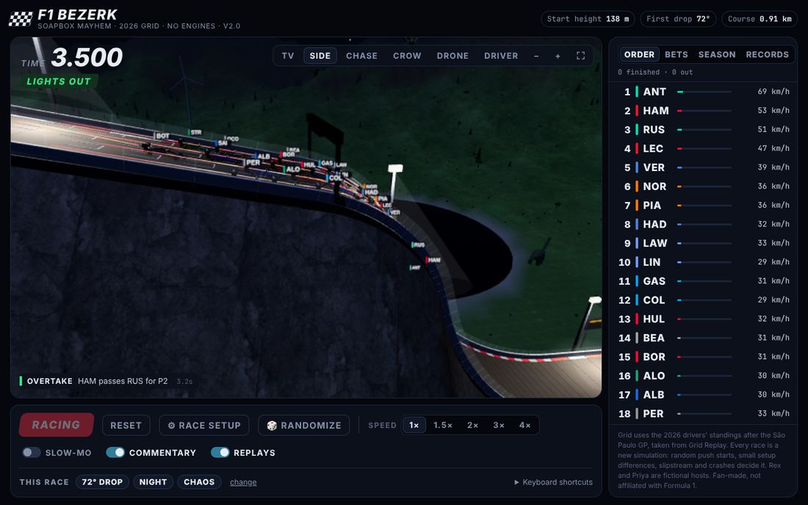
Night race. Floodlit track, light trails behind the cars.
v2.0 · round 4
Real scanned nature
Real 3D-scanned trees, bushes and grass, photographed from 8 sides and shown as camera-facing photo cards (the way games draw big forests).
Real scanned rock shapes, simplified for the browser and wrapped in the scanned rock photo.
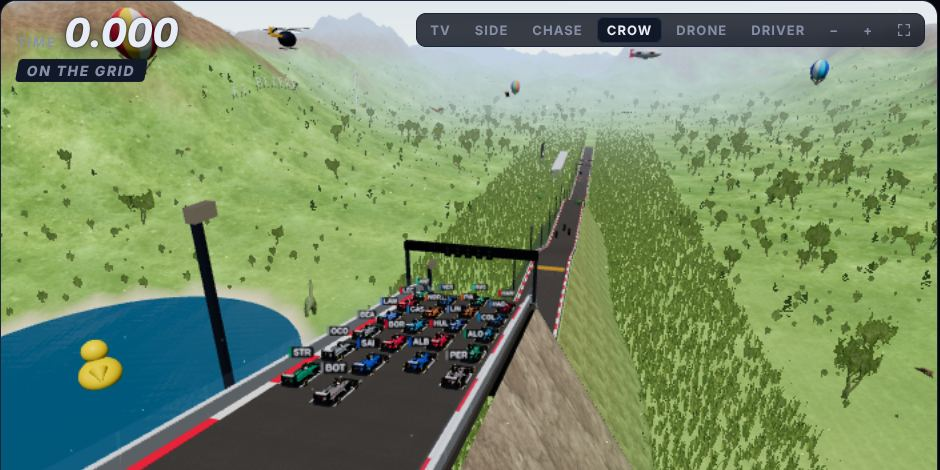
Scanned trees on the hills, a tall-grass meadow by the track.
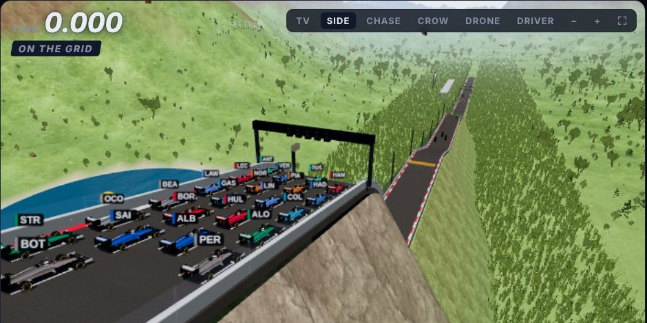
From the side camera.
v2.0 · round 5
Phone cockpit, creatures and venue
📺 Phone driver view: friends watch live from inside the car they bet on, with position, speed and race time.
Real wing profiles, carbon, team-colour helmets and driver codes on the cars.
Smooth T-rex, raptors and long-necked dinosaurs with mottled skin; lattice light towers; grandstands with people, ad boards and flags.
Fixed a bug that drew the grass at fir-tree size.
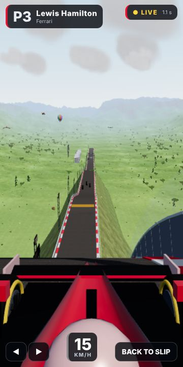
Phone cockpit. Live from Hamilton's Ferrari.
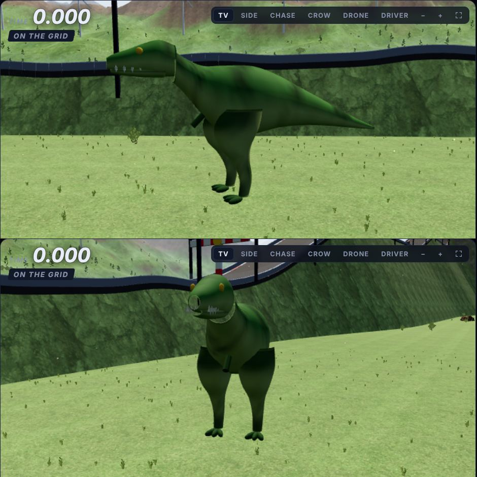
New T-rex. One smooth body, mottled skin, real legs.
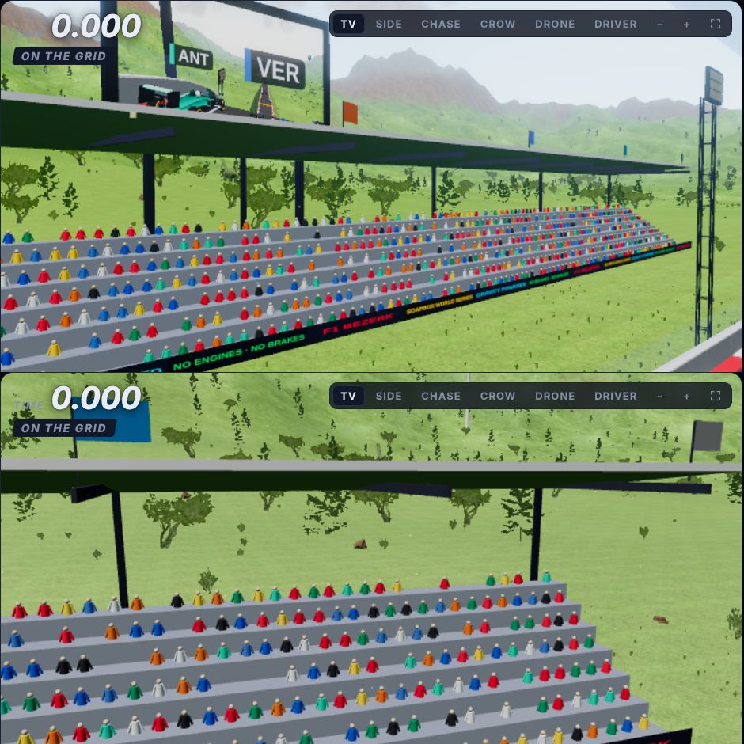
Grandstands. Fans, ad boards, flags and a lattice tower.
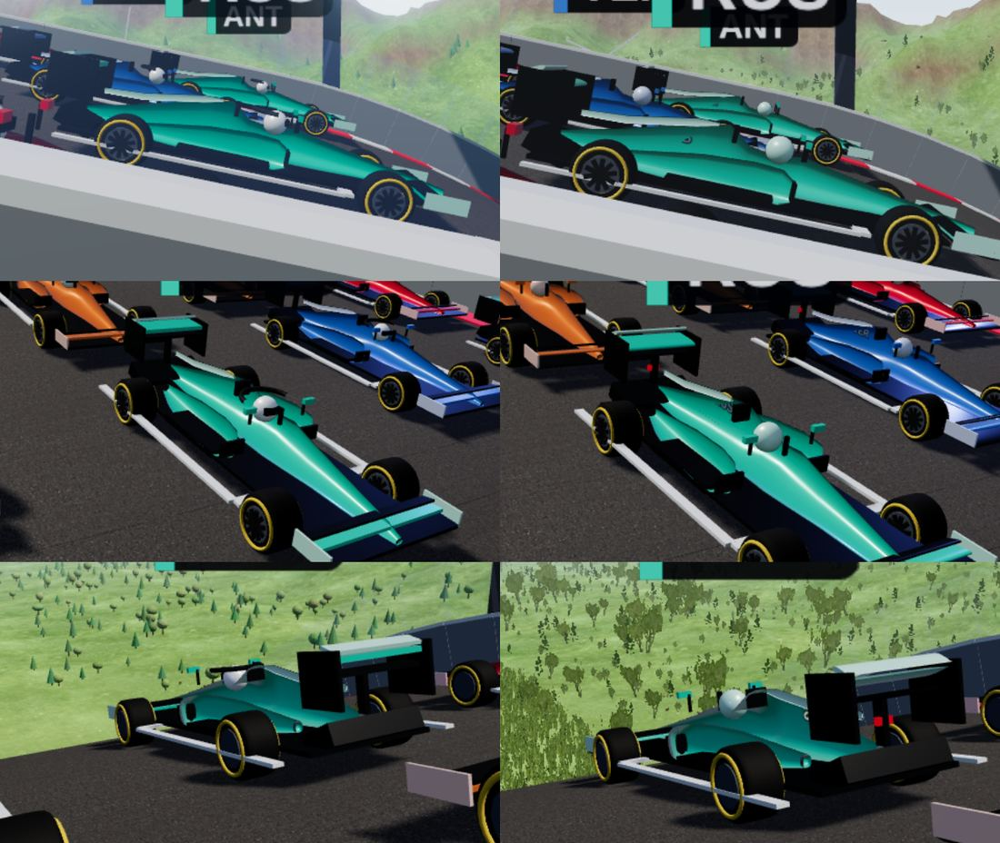
Left round 2, right round 5. Wing profiles, helmets, rear light.
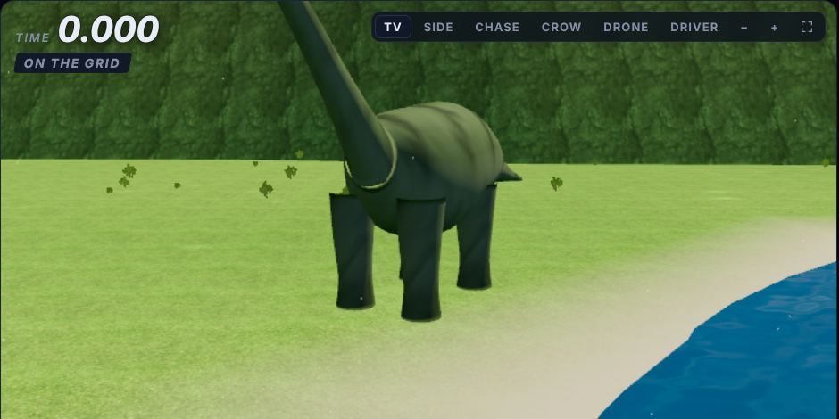
Long-necked dinosaur by the lake.
v2.0 · round 6
Championship, phones see everything, lighter
🏆 5-race championship: random setup each race, F1 points, standings after every race and a champion's ceremony with fireworks.
Phones now also see the obstacles and creatures: wrecking ball, windmill, balls, pins, the stampede herd and the pterodactyl.
About 3.6× fewer triangles per frame, with nothing visible removed.
The downloaded copy works when opened from disk (simpler scenery), and the phone betting slip explains itself instead of waiting forever.
v2.0 · round 7
Replays, sound, TV graphics, director
Replays start just before the moment, slow right down at impact, frame both cars in a collision and show a headline; the hosts talk about the replay while it plays.
Original team liveries (sweep, twin stripes or dark fade), tyre wall lettering, slotted endplates.
Sound made in the browser: wind, crashes, landings, crowd, T-rex roars, rain, start beeps, fireworks (SOUND switch, key U).
Live gaps in the running order and TV lower-thirds: BATTLE FOR P2, NEW LEADER, SPEED TRAP.
🎬 DIRECTOR camera (key 7): cuts like TV, onboard for overtakes and battles, slow-motion finish.
Phones watching the cockpit view also get the replays.
v2.0 · round 8 · now
Fixes: T-rex mouth, cameras under the track
A car caught by a T-rex is now held crosswise in the middle of its mouth and follows the head. Before, it hung beside the jaw.
Cameras can no longer sink under the road deck or the hillside, which showed only black. It covers every camera, the replay camera and the phone replay camera.
A downloaded copy served from a local web server no longer shows the phone betting slip on top of the race.
No screenshots for this round yet. Tested in a desktop browser; the phone replay camera and the kicker jump were not re-checked.
Still on the list
True photorealNeeds Unreal Engine and a gaming PC; the browser version can keep improving but won't look like a photo.
Better carsNo free scanned F1-style car exists; more hand modelling or a generated model (would use your Higgsfield credits).
Check by ear and on a phoneThe sound has never been tuned by ear, and the phone replay camera (moved back after it started inside the T-rex's mouth) hasn't been re-tested.
Tyre letteringOnly readable up close; it could be bigger, or shown only in onboard shots.